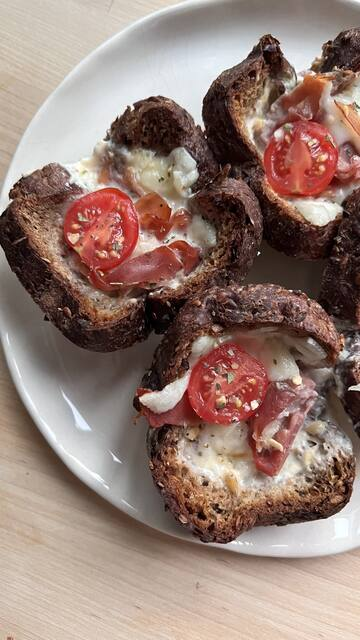

Recette · Petit-déjeuner · 25 min environ
Mini-quiches au pain protéiné
Préparez « Mini-quiches au pain protéiné » avec The Original Protein Bread : une recette facile, prête en 25 minutes environ. Elle contient : pain protéiné, œuf et jambon, et elle est parfaite pour un petit-déjeuner ou un brunch. The Original Protein Bread apporte 28 g de protéines pour 100 g.
5 ingrédients4 étapes25 min environ
 Préparée avecThe Original Protein Bread500 gVoir le produit
Préparée avecThe Original Protein Bread500 gVoir le produitIngrédients
- Pain protéiné
- Œuf
- Jambon
- Fromage
- Légumes au choix
Préparation
- 01Aplatir les tranches au rouleau
- 02Les placer dans un moule à muffins
- 03Garnir d’œuf, de jambon, de fromage et de légumes
- 04Cuire au four